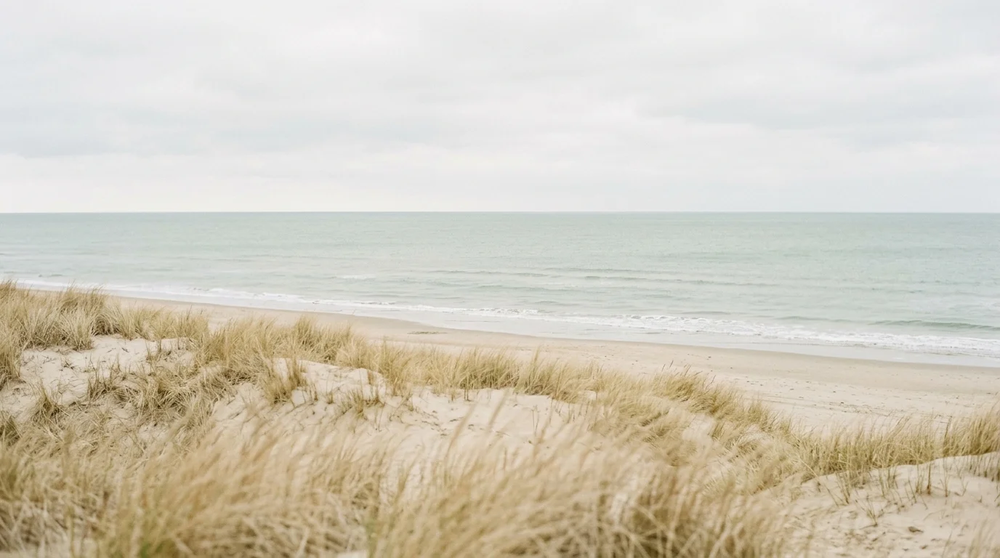

Tu alquiler,
en buenas manos.
Una propuesta de administración a la medida de tu propiedad.
- Publicaciones y consultas
- Coordinación de reservas
- Atención a huéspedes
- Coordinación de limpieza y mantenimiento
GESTIÓN DE ALQUILERES TEMPORARIOS
En Manto nos ocupamos de tu alquiler y de cómo se muestra al mundo. Gestión, marca, fotos y web, con una mirada cercana.

PARA PROPIETARIOS
Desde la gestión de tu alquiler hasta una presencia digital que muestre lo mejor de tu propiedad.
Una propuesta de administración a la medida de tu propiedad.
Construimos una identidad que refleje lo que hace especial a tu alojamiento.
Un espacio propio para mostrarla y facilitar las consultas.
Cada propuesta se define según la propiedad y las tareas que necesites delegar.
EL UNIVERSO MANTO
CERCA DE VOS. CERCA DE TU PROPIEDAD.
Queremos que sepas quién cuida tu propiedad y cómo se trabaja en cada etapa.
Conocemos tu propiedad, tu situación y lo que querés delegar.
Definimos juntos servicios, responsabilidades y forma de trabajo.
Preparamos la presentación y coordinamos las tareas acordadas.
PREGUNTAS FRECUENTES
Sí. La propuesta permite contratar gestión, identidad, fotografía o web según lo que necesite tu propiedad.
Podemos presentarla en el catálogo de Manto y enlazar su sitio actual, como hacemos con Laberinto y Departamentos Norte.
A partir de las tareas acordadas y las características de la propiedad. El alcance y el presupuesto se definen antes de comenzar.
Entrá a Propiedades y elegí tu alojamiento. Podés consultar por La casita desde su Instagram y por Laberinto o Departamentos Norte a través de sus sitios web.
HAGAMOS LUGAR A LO QUE VIENE
Contanos qué necesitás y pensemos juntos cómo acompañarte.
El contacto de Manto se incorporará en la próxima versión del sitio.